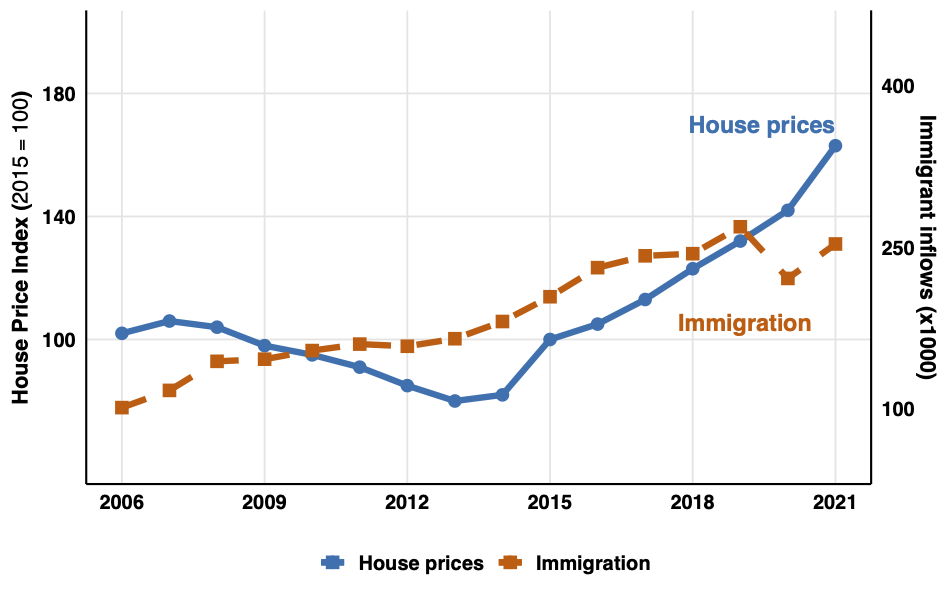

Research
Income Heterogeneity of Immigrants and House Price Dynamics

Source: CBS
The long-run relationship between house prices and rents
Show Abstract
I test whether house prices and rents are related in the long and short run using a new quarterly
dataset for 18 OECD countries from 1968 to 2021. If agents treat houses as assets, annual rents
correspond to the yearly net present value of house expenses, a function of prices. It follows
that house prices and rents should be positively related. I find evidence of cointegration in
only half of countries using Johansen tests. I observe a negative response of rents to a positive
shock in house prices. Two factors might explain these results: heterogeneity in house quality
reducing dwellings' comparability, and rental sector size relieving demand pressure on rental prices.

Source: OECD
Tax-based fiscal consolidation and the labor market
Tax-based fiscal consolidation and the labor market
Show Abstract
This paper examines the labor market consequences of tax-based fiscal consolidation in Italy over the period 2006–2019. Exploiting municipality-level data on personal income tax declarations and labor market outcomes across 610 local labor markets (LLMs), combined with the narrative fiscal shock series of Alesina, Favero, and Giavazzi (2020), we estimate impulse response functions using local projections instrumented by a Bartik shift-share design. Our identification strategy leverages cross-sectional variation in pre-existing tax intensity interacted with nationally-determined consolidation shocks, isolating the causal effects of direct tax increases from endogenous responses to local business cycles. The results reveal a one-percentage-point increase in direct taxes raises unemployment and suppresses employment rates over a four-year horizon.
Family loans and housing market overbidding: evidence from the Netherlands